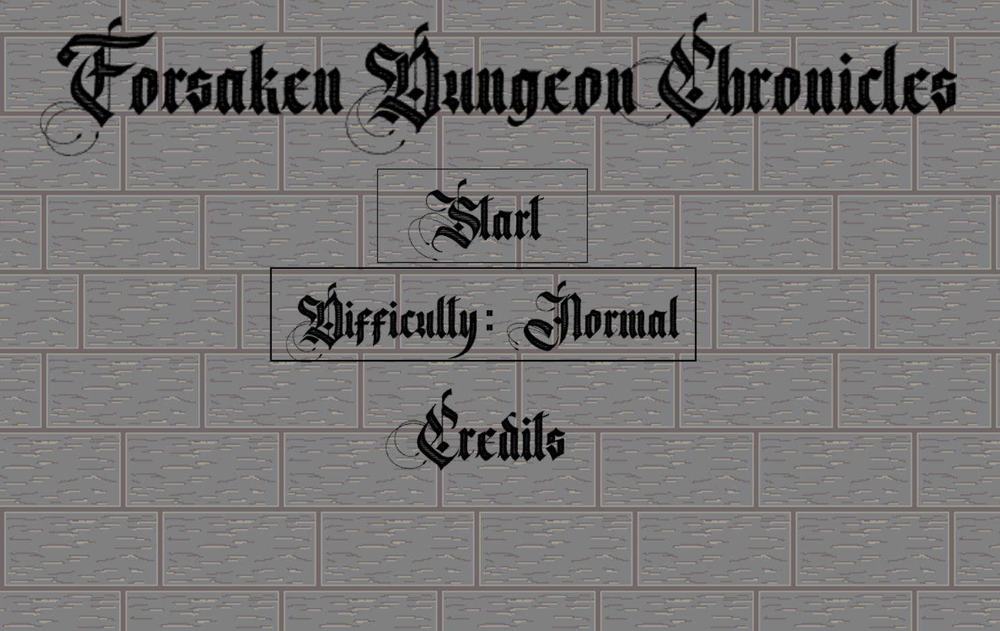
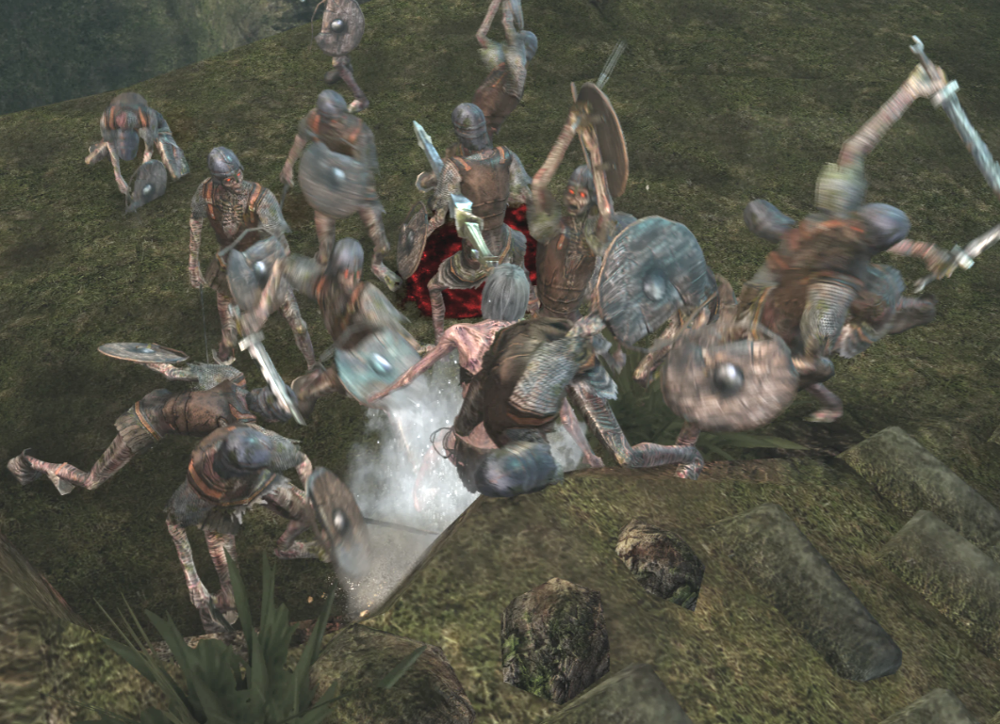
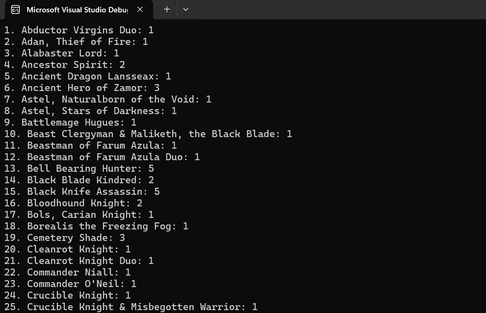

Forsaken Dungeon Chronicles
Forsaken Dungeon Chronicles is a unique and well thought out dungeon crawler coded in C# that I've been working on for a while now. It contains a pathfinding algorithm that works on the grid I supplied it. It's used to find the stamina needed for entities on the board to move to specific squares. I mention the pathfinder specifically because it's the coolest thing I've coded without any outside assistance. The grid is also completely randomized in size (width and height) and the pathfinder still works with that. This was the first project I ever took on and I have yet to finish it. Click the widget to learn more!
Dark Souls 1 Enemy Multiplier
I could talk about Dark Souls 1 for hours as it's one of my favorite games of all time. I'll keep this explanation short though and elaborate on it on it's own page. This project really means a lot to me because it was my first ever time using Github and creating a custom exe file for a mod. I needed some help with it because Dark Souls 1 uses it's own repository called SoulsFormats to help with editing things within the game. Eventually though, I was able to iterate through every instance of an enemy in the game for as many times the user desired. Click the widget to learn more!
Duplicate Finder and Displayer
I initially got inspired to make this because I wanted to know how many duplicated bosses the game "Elden Ring" by FromSoftware had. The findings were surprising and I even double checked them. I was able to find the duplicates and display a neat list of the unique values with the number of duplicates next to them. This program works for whatever kind of list you want though just as long as it comes from a text file where each line is a new item. I'll probably be utilizing this tool someday so it was a great project to work on. Click the widget to learn more!